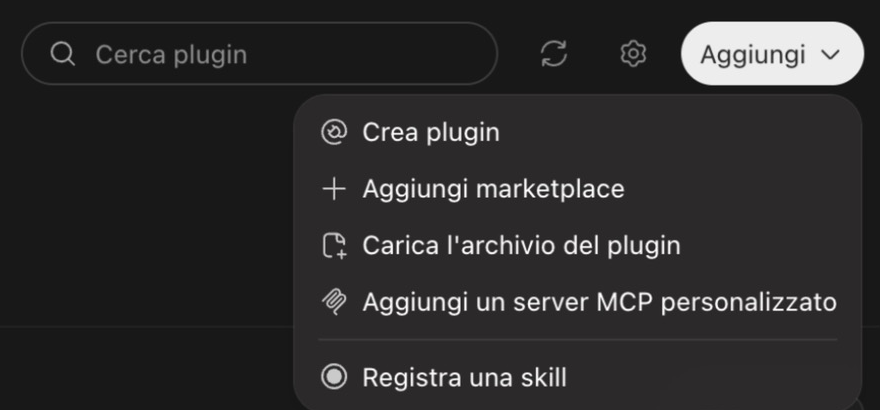
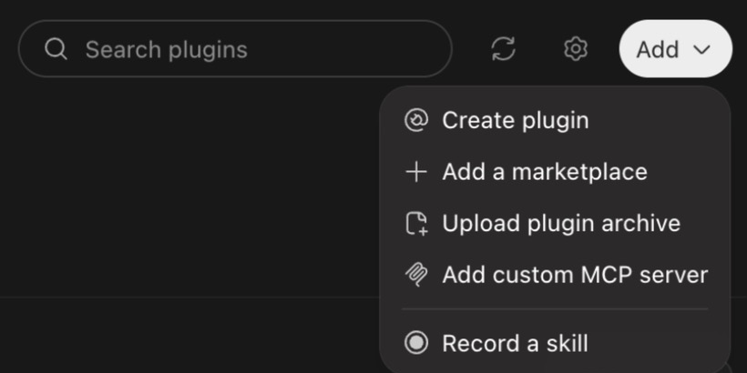
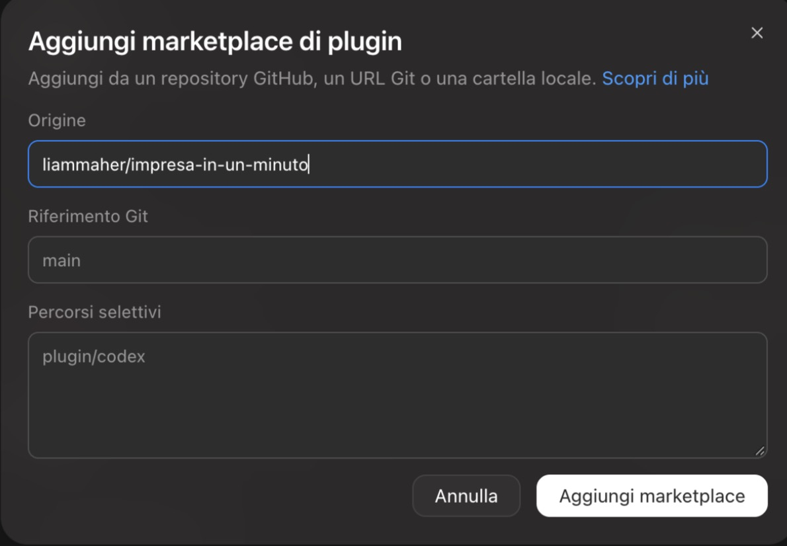
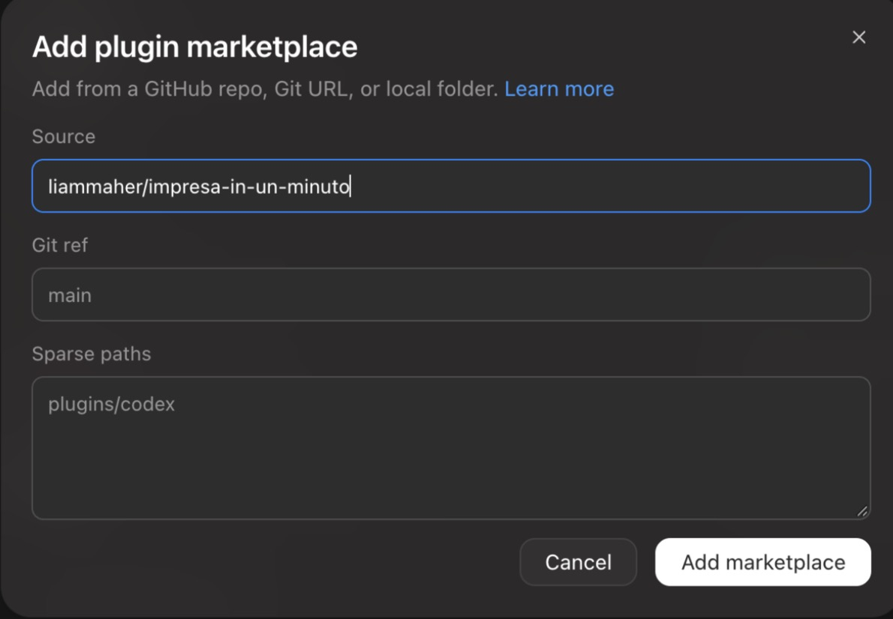

Impresa in un minuto
- Allega i documenti e la procura
- Controlla email e numeri di telefono
- Confronta l'anteprima del portale con i documenti
- Compila ogni sezione in pochi secondi
- Attaches the documents and the procura
- Checks email addresses and phone numbers
- Checks the portal's preview against the documents
- Fills each section in seconds
Per chi queste pratiche le presenta già. Impresa in un minuto compila: non è una consulenza e non decide al posto tuo. Claude può sbagliare, e il controllo finale è tuo. Se non sai riconoscere un errore in una pratica, non usarlo.
For people who already file these pratiche. Impresa in un minuto fills in forms: it is not a consultancy and does not decide for you. Claude can make mistakes, and the final check is yours. If you can't tell when a pratica is filled in wrongly, don't use it.
-
Apri i plugin di Claude
Open Claude's plugins
-
Aggiungi il marketplace
Add the marketplace
In alto a destra: + Aggiungi › Aggiungi marketplace.
Top right: + Add › Add marketplace.


-
Collega Impresa in un minuto
Connect Impresa in un minuto
Scegli Aggiungi da un repository e incolla:
Choose Add from a repository and paste:
liammaher/impresa-in-un-minutoPoi clicca Sincronizza.
Then click Sync.


-
Aggiungi Impresa in un minuto
Add Impresa in un minuto
Cerca
impresa in un minutonella casella di ricerca dei plugin: clicca +.Search for
impresa in un minutoin the plugins search box: click +.Dopo Sincronizza non sempre compare tra i Nuovi plugin: se non lo vedi, cercalo per nome.
After Sync it doesn't always show up under New plugins: if you don't see it, search for it by name.


Fatto. Ora provalo
Done. Now try it
Nell'app Claude per computer scrivi:
In the Claude desktop app type (in Italian, as shown):
Fammi vedere una prova
Claude compila una CILA con dati inventati sul portale vero. Tu devi solo accedere con SPID: non viene inviato nulla.
Claude fills in a CILA with made-up data on the real portal. You only have to log in with SPID: nothing is sent.
Aggiornare Impresa in un minuto
Prima di una pratica importante, controlla gli aggiornamenti: + Aggiungi › Gestisci marketplace › ⋯ › Verifica aggiornamenti. Se resta la versione vecchia: Rimuovi, riapri Claude e ripeti i passi 2 e 3.
Updating Impresa in un minuto
Before an important pratica, check for updates: + Add › Manage marketplaces › ⋯ › Check for updates. If the old version stays: Remove, reopen Claude and repeat steps 2 and 3.
«Plugin failed validation» o «plugin.json must be at .claude-plugin/plugin.json»
Hai caricato un file zip. Non serve e non funziona: Code › Download ZIP su GitHub scarica tutto il codice, non il plugin, e Claude lo rifiuta. Chiudi la finestra con Annulla e usa i passi sopra: Aggiungi da un repository e liammaher/impresa-in-un-minuto.
«Plugin failed validation» or «plugin.json must be at .claude-plugin/plugin.json»
You uploaded a zip file. That isn't needed and doesn't work: Code › Download ZIP on GitHub downloads all of the code, not the plugin, and Claude rejects it. Close the window with Cancel and use the steps above: Add from a repository and liammaher/impresa-in-un-minuto.
Un avviso o una richiesta che non capisci
«Aggiungi solo marketplace di cui ti fidi» è l'avviso che Claude mostra per ogni plugin non suo: il codice di Impresa in un minuto è pubblico. Concedi accesso a GitHub non serve: chiudi l'avviso. Sul Mac, se ti chiede di installare gli strumenti per sviluppatori, accetta: contengono Python, che serve a Impresa in un minuto.
A warning or request you don't understand
«Only add marketplaces you trust» is the warning Claude shows for every plugin that isn't its own: Impresa in un minuto's code is public. You don't need to Grant access to GitHub: close the warning. On a Mac, if it asks you to install the developer tools, accept: they include Python, which Impresa in un minuto needs.
- Non allega i documenti né la procura: li alleghi tu
- Non controlla email e numeri di telefono
- Non confronta l'anteprima del portale con i documenti
- Più lento: fino a 45 secondi a sezione
- Non funziona sul web né sul telefono: serve l'app per Mac o Windows
- Doesn't attach the documents or the procura: you attach them
- Doesn't check email addresses and phone numbers
- Doesn't check the portal's preview against the documents
- Slower: up to 45 seconds a section
- Doesn't work on the web or on a phone: you need the Mac or Windows app
-
Apri i plugin di ChatGPT
Open ChatGPT's plugins
Nell'app ChatGPT per computer, nella barra a sinistra: Personalizza › Plugin.
In the ChatGPT desktop app, in the left bar: Customize › Plugins.
-
Aggiungi il marketplace
Add the marketplace
In alto a destra: Aggiungi › Aggiungi marketplace.
Top right: Add › Add a marketplace.


-
Collega Impresa in un minuto
Connect Impresa in un minuto
Nella casella Origine incolla:
In the Source box paste:
liammaher/impresa-in-un-minutoLascia vuote le altre caselle e clicca Aggiungi marketplace.
Leave the other boxes empty and click Add marketplace.


-
Installa Impresa in un minuto
Install Impresa in un minuto
Cerca
impresa in un minutoin Cerca plugin e clicca il + accanto.Search for
impresa in un minutoin Search plugins and click the + beside it.Se non compare subito, chiudi e riapri l'app.
If it doesn't show up at once, quit and reopen the app.
Fatto. Ora provalo
Done. Now try it
Nell'app ChatGPT per computer, in una nuova conversazione, scrivi:
In the ChatGPT desktop app, in a new conversation, type (in Italian, as shown):
Fammi vedere una prova
ChatGPT compila una CILA con dati inventati sul portale vero, nel browser dell'app, in circa 10 minuti. Tu devi solo accedere con SPID: non viene inviato nulla.
ChatGPT fills in a CILA with made-up data on the real portal, in the app's browser, in about 10 minutes. You only have to log in with SPID: nothing is sent.
Aggiornare Impresa in un minuto
Prima di una pratica importante, nella pagina dei plugin: l'ingranaggio ⚙ accanto ad Aggiungi › Marketplace › Aggiorna accanto a Impresa in un minuto. Poi chiudi e riapri l'app.
Updating Impresa in un minuto
Before an important pratica, on the plugins page: the gear ⚙ next to Add › Marketplace › Upgrade beside Impresa in un minuto. Then quit and reopen the app.
Per tutto lo studio (piani Business, Enterprise, Edu)
L'amministratore può aggiungerlo per tutti dalla Admin Console di OpenAI: Plugins › Add › Import marketplace, con la sorgente https://github.com/liammaher/impresa-in-un-minuto. Nei piani Enterprise ed Edu i plugin sono spenti finché l'amministratore non li attiva.
For the whole studio (Business, Enterprise, Edu plans)
The admin can add it for everyone from OpenAI's Admin Console: Plugins › Add › Import marketplace, with the source https://github.com/liammaher/impresa-in-un-minuto. On Enterprise and Edu plans plugins are off until the admin turns them on.
I dati dei clienti in ChatGPT
Nei piani Plus e Pro, nelle impostazioni di ChatGPT disattiva «Migliora il modello per tutti». Nei piani Business, Enterprise ed Edu i dati non sono usati per l'addestramento. I valori che ChatGPT scrive sul portale li prende dalla cartella del lavoro sul tuo computer, senza ripassarli dalla conversazione.
Your clients' data in ChatGPT
On Plus and Pro plans, turn off «Improve the model for everyone» in ChatGPT's settings. On Business, Enterprise and Edu plans the data isn't used for training. The values ChatGPT types into the portal come from the job's folder on your computer, without passing through the conversation again.